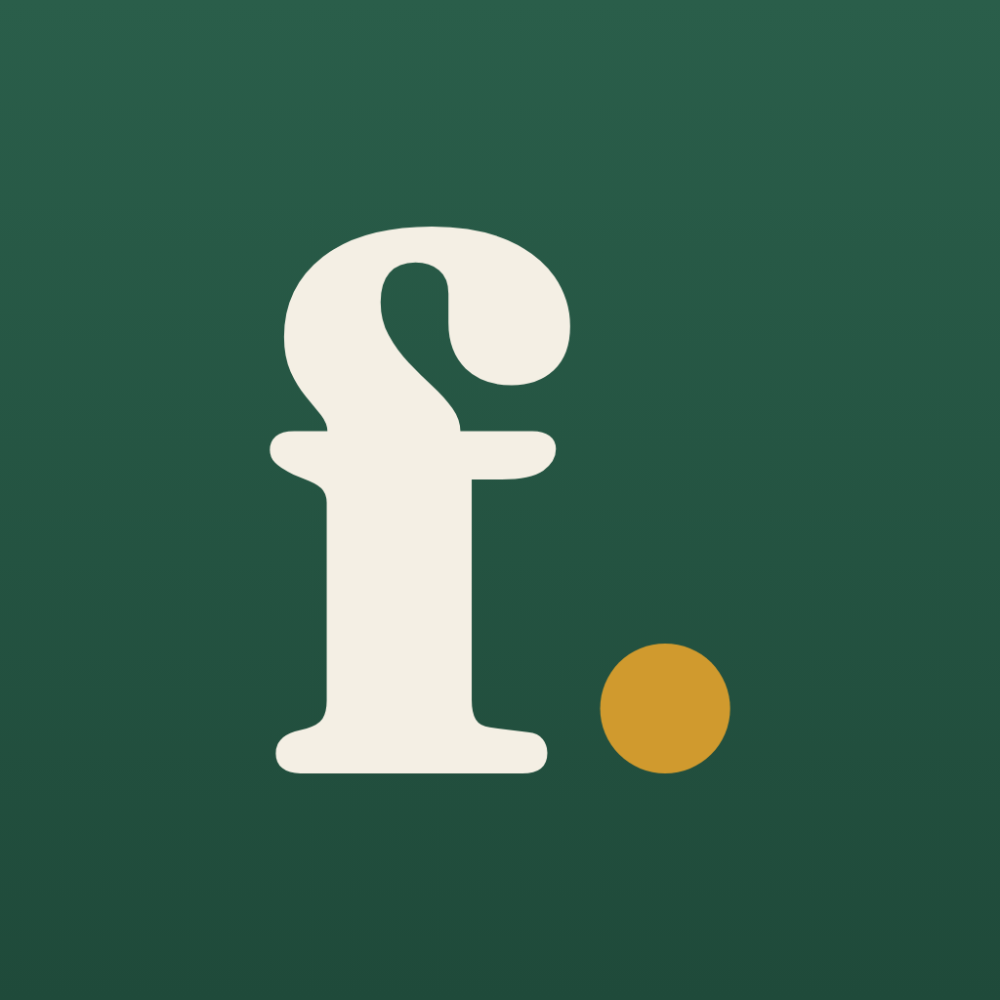

Rapport · Company Programme · Business Minds
En app, der hjælper danske boligejere og bilister med at finde, sammenligne og ringe direkte til lokale håndværkere og værksteder – uden mellemled, og rækkefølgen kan ikke købes.